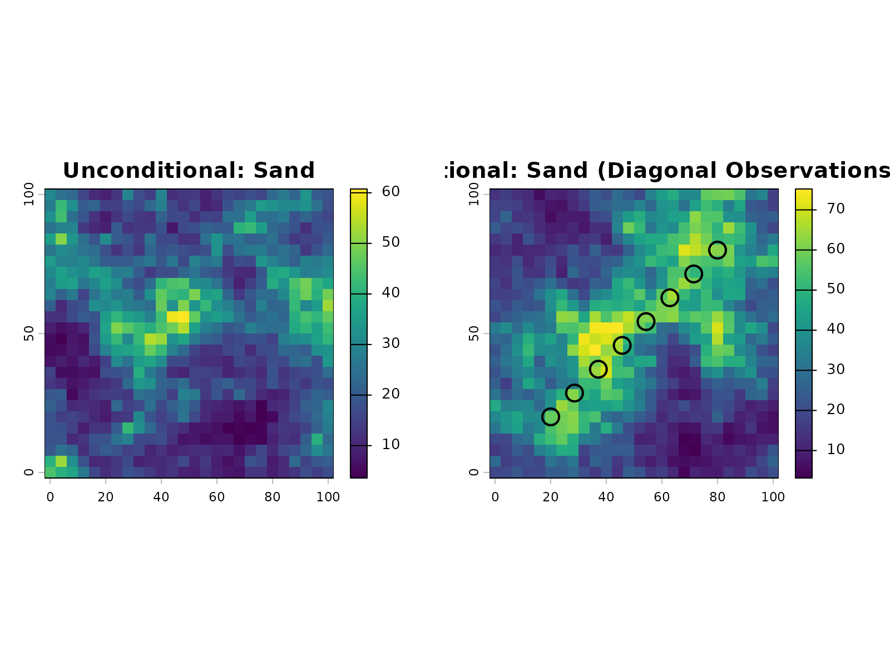
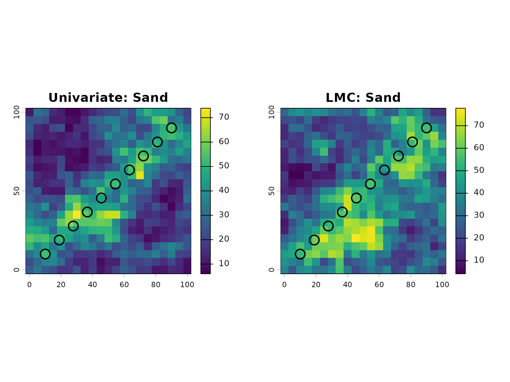
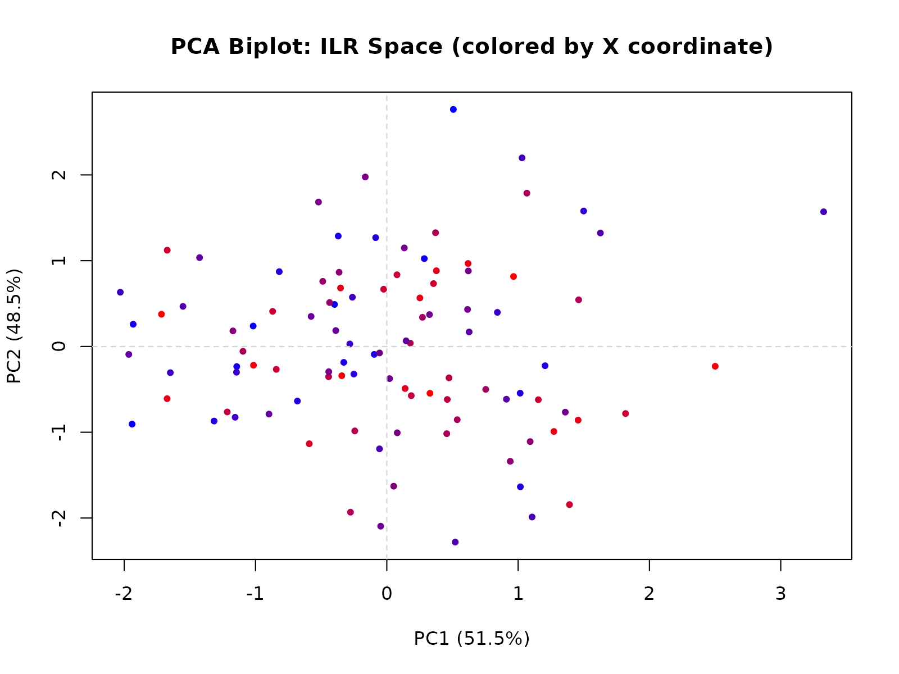
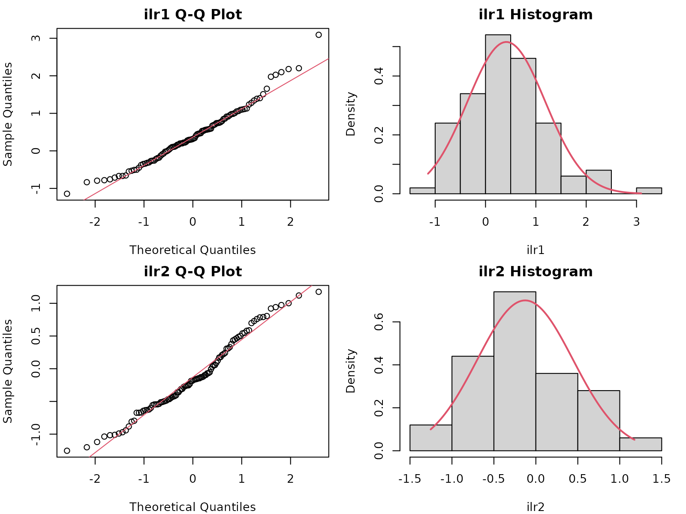
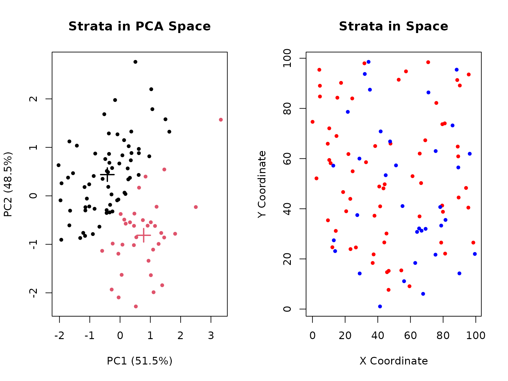

Soil Texture Workflow
Andrew G. Brown
2026-01-28
soil_texture_workflow.RmdOverview
This vignette demonstrates a workflow for spatially simulating soil texture separates (Sand, Silt, Clay) using the geocoda package.
Soil texture is a compositional variable; its components must sum to exactly 100%. This sum constraint violates standard statistical assumptions (e.g., variables are treated as independent), making conventional multivariate geostatistics inappropriate. The Isometric Log-Ratio (ILR) transformation is one principled approach designed specifically for compositional data: it removes the sum constraint, allowing standard multivariate geostatistics to be applied to the transformed space. Back-transformation of simulation results guarantees that all realizations sum to 100% and remain non-negative. This workflow uses ILR transformations; however, other transformations (e.g., Centered Log-Ratio or Additive Log-Ratio) offer different properties and may be more suitable depending on the analytical goal. The framework is generic and applicable to any -part composition (geochemistry, vegetation classes, mineral assemblages, etc.).
The workflow follows five key steps:
- Constrain - Define valid ranges for soil fine-earth fraction components
- Transform - Convert to ILR space to eliminate the sum constraint
- Model - Fit a Linear Model of Coregionalization (LMC) using covariance structure and spatial variograms
- Simulate - Generate spatial realizations in ILR space
- Back-transform - Return to original units, preserving the 100% constraint
Data Preparation and Analysis
Define Composition Constraints
Start by defining realistic bounds for soil texture components. These constraints represent the plausible range of values you expect to simulate.
constraints <- list(
SAND = list(min = 0, max = 40),
SILT = list(min = 50, max = 80),
CLAY = list(min = 10, max = 20)
)This example uses typical silt loam bounds: sand and clay restricted to narrow ranges, silt filling the remainder to sum to 100%.
Generate Valid Composition Grid
Expand the constraints into a grid of all physically valid combinations that sum to exactly 100%. For exploration, coarse grids (0.5-1% resolution) are usually sufficient, though finer grids allow more detailed compositions at higher computational cost.
grid <- gc_expand_bounds(constraints, step = 1.0, target_sum = 100)With 1% resolution, we get nrow(grid) valid
compositions. Let’s check the first few:
head(grid)
#> SAND SILT CLAY
#> 1 40 50 10
#> 2 39 51 10
#> 3 38 52 10
#> 4 37 53 10
#> 5 36 54 10
#> 6 35 55 10All rows sum to 100% within floating-point tolerance:
Bootstrap Samples from Valid Compositions
Sample from the valid composition grid to create a representative
sample population. This can use uniform random sampling or soil
texture-aware methods (if aqp is available). For soil
texture-aware sampling that respects texture class boundaries, use
method = "soil_texture" with the aqp package
installed.
samples <- gc_resample_compositions(
grid,
n = 1000,
method = "uniform"
)Check the sample statistics:
data.frame(
Component = c("SAND", "SILT", "CLAY"),
Mean = colMeans(samples$samples),
StdDev = apply(samples$samples, 2, sd),
Min = apply(samples$samples, 2, min),
Max = apply(samples$samples, 2, max)
)
#> Component Mean StdDev Min Max
#> SAND SAND 20.124 9.352438 0 40
#> SILT SILT 65.029 8.949987 50 80
#> CLAY CLAY 14.847 3.043494 10 20Estimate ILR Parameters
Transform the sample compositions to ILR space and estimate the mean vector and covariance matrix.
params <- gc_ilr_params(samples$samples)
params$mean
#> [1] 0.9210350 -0.6840842The covariance matrix:
params$cov
#> [,1] [,2]
#> [1,] 0.2690597 0.12365761
#> [2,] 0.1236576 0.09692909Geostatistical Modeling
Suggest and Set Variogram Parameters
The variogram quantifies spatial correlation by measuring how similarity between values changes with distance:
where represents the value at location .
Key properties:
- At distance 0: (perfect similarity with itself)
- At small distances: is small, indicating high correlation
- At large distances: approaches a maximum value (the sill), indicating independence
- Nugget effect: Often a discontinuity at , representing measurement error or small-scale variation
- Range: The distance at which the variogram reaches the sill, beyond which observations are uncorrelated
Use a helper function to suggest reasonable parameters:
extent <- c(0, 0, 100, 100)
suggestions <- gc_vgm_defaults(params, extent)
suggestions
#> $range
#> [1] 47.14045
#>
#> $nugget
#> [1] 0.001829944
#>
#> $mean_sill
#> [1] 0.1829944Create the variogram model using the suggested range, but reduce it substantially to better capture local features. We also use a small nugget to preserve the conditioning effect:
vgm_model <- gstat::vgm(
psill = 1,
model = "Exp",
range = suggestions$range * 0.35,
nugget = 0.01
)
vgm_model
#> model psill range
#> 1 Nug 0.01 0.00000
#> 2 Exp 1.00 16.49916Build Multivariate Geostatistical Model
Combine the ILR covariance structure with the spatial variogram to create a joint multivariate representation:
model <- gc_ilr_model(params, variogram_model = vgm_model)
model
#> data:
#> ilr1 : formula = ilr1`~`1 ; dummy data beta = 0.921035
#> ilr2 : formula = ilr2`~`1 ; dummy data beta = -0.6840842
#> variograms:
#> model psill range
#> ilr1[1] Nug 0.0026905968 0.00000
#> ilr1[2] Exp 0.2690596802 16.49916
#> ilr2[1] Nug 0.0009692909 0.00000
#> ilr2[2] Exp 0.0969290870 16.49916By default, gc_ilr_model() uses Independent Univariate
Kriging (one model per ILR dimension, no cross-covariance terms). This
approach is numerically stable and standard practice. For comparison,
you can also build a Linear Model of Coregionalization (LMC) with
cross-covariance terms by specifying
model_type = "lmc":
## Alternative: Build LMC Model with Cross-Covariance Terms
model_lmc <- gc_ilr_model(params, variogram_model = vgm_model, model_type = "lmc")
model_lmc
#> data:
#> ilr1 : formula = ilr1`~`1 ; dummy data beta = 0.921035
#> ilr2 : formula = ilr2`~`1 ; dummy data beta = -0.6840842
#> variograms:
#> model psill range
#> ilr1[1] Nug 0.0026905968 0.00000
#> ilr1[2] Exp 0.2690596802 16.49916
#> ilr2[1] Nug 0.0009692909 0.00000
#> ilr2[2] Exp 0.0969290870 16.49916
#> ilr1.ilr2[1] Nug 0.0012365761 0.00000
#> ilr1.ilr2[2] Exp 0.1236576104 16.49916The LMC approach includes spatial correlation between ILR dimensions. While theoretically more complete, it’s more numerically complex and rarely necessary given that the ILR transformation already decorrelates the data significantly. For most applications, the univariate approach is preferred.
Spatial Simulation
Define Simulation Grid
Create a regular spatial grid where you want to simulate soil texture:
x_range <- seq(0, 100, by = 4)
y_range <- seq(0, 100, by = 4)
grid_df <- expand.grid(x = x_range, y = y_range)
grid_sf <- sf::st_as_sf(grid_df, coords = c("x", "y"))This creates a 26×26 grid with 4 unit spacing
(nrow(grid_sf) cells total).
Generate Spatial Realizations
Simulate multiple equally-probable realizations of soil texture across the domain. For uncertainty quantification, use 10-20 realizations; for exploratory analysis, 1-3 realizations are sufficient.
sims <- gc_sim_composition(
model,
grid_sf,
nsim = 3,
target_names = c("sand", "silt", "clay"),
crs = "local"
)
sims
#> class : SpatRaster
#> size : 26, 26, 9 (nrow, ncol, nlyr)
#> resolution : 4, 4 (x, y)
#> extent : -2, 102, -2, 102 (xmin, xmax, ymin, ymax)
#> coord. ref. : Cartesian (Meter)
#> source(s) : memory
#> names : sand.sim1, silt.sim1, clay.sim1, sand.sim2, silt.sim2, clay.sim2, ...
#> min values : 2.188856, 33.24090, 3.570206, 2.666431, 31.87933, 3.689029, ...
#> max values : 46.666041, 92.89209, 37.131396, 45.353244, 92.85779, 37.892626, ...Validation
Verify that constraints are satisfied and output statistics are reasonable:
vals <- as.data.frame(terra::values(sims))Check the sum constraint for each realization:
for (sim_idx in 1:3) {
col_indices <- grep(paste0("sim", sim_idx), colnames(vals))
sums <- rowSums(vals[, col_indices])
cat(
"Realization", sim_idx, ": min =", round(min(sums), 4),
", max =", round(max(sums), 4),
", mean =", round(mean(sums), 4), "\n"
)
}
#> Realization 1 : min = 100 , max = 100 , mean = 100
#> Realization 2 : min = 100 , max = 100 , mean = 100
#> Realization 3 : min = 100 , max = 100 , mean = 100Check non-negativity:
Summary Statistics and Visualization
Summary of the first realization:
first_sim <- vals[, grep("sim1", colnames(vals))]
summary(first_sim)
#> sand.sim1 silt.sim1 clay.sim1
#> Min. : 2.189 Min. :33.24 Min. : 3.57
#> 1st Qu.:10.534 1st Qu.:60.58 1st Qu.:11.58
#> Median :15.211 Median :68.58 Median :15.57
#> Mean :16.577 Mean :67.60 Mean :15.83
#> 3rd Qu.:20.797 3rd Qu.:76.39 3rd Qu.:19.95
#> Max. :46.666 Max. :92.89 Max. :37.13Correlation structure:
cor(first_sim)
#> sand.sim1 silt.sim1 clay.sim1
#> sand.sim1 1.0000000 -0.8887263 0.3789889
#> silt.sim1 -0.8887263 1.0000000 -0.7610566
#> clay.sim1 0.3789889 -0.7610566 1.0000000Marginal distributions:
Advanced Techniques
Conditional Simulation with Observed Data
In practice, you often have field observations or laboratory measurements of soil texture at specific locations. Conditional simulation honors these observed values while generating realizations at unobserved locations, reducing uncertainty near samples.
Prepare Conditioning Data
Create spatially-structured conditioning data to simulate a realistic field scenario. We’ll create observation points with higher sand content along a diagonal line:
set.seed(123)
# Create observation locations along a diagonal line
n_obs <- 8
t_vals <- seq(0, 1, length.out = n_obs)
obs_coords <- data.frame(
x = 20 + 60 * t_vals,
y = 20 + 60 * t_vals
)
# Assign sandy loam compositions with measurement variation
obs_comps <- list()
for (i in 1:nrow(obs_coords)) {
base_comp <- c(SAND = 60, SILT = 25, CLAY = 15)
noise <- rnorm(3, mean = 0, sd = 2)
obs_comp <- pmax(pmin(base_comp + noise, 100), 0)
obs_comp <- obs_comp / sum(obs_comp) * 100
obs_comps[[i]] <- obs_comp
}
obs_samples <- as.data.frame(do.call(rbind, obs_comps))Transform observations to ILR space:
obs_ilr <- compositions::ilr(compositions::acomp(obs_samples))
colnames(obs_ilr) <- c("ilr1", "ilr2")
conditioning_data <- sf::st_as_sf(
data.frame(x = obs_coords$x, y = obs_coords$y, obs_ilr),
coords = c("x", "y")
)
conditioning_data
#> Simple feature collection with 8 features and 2 fields
#> Geometry type: POINT
#> Dimension: XY
#> Bounding box: xmin: 20 ymin: 20 xmax: 80 ymax: 80
#> CRS: NA
#> ilr1 ilr2 geometry
#> 1 -0.6188566 -0.6050353 POINT (20 20)
#> 2 -0.6134338 -0.6115086 POINT (28.57143 28.57143)
#> 3 -0.7052796 -0.8155840 POINT (37.14286 37.14286)
#> 4 -0.5424064 -0.7682648 POINT (45.71429 45.71429)
#> 5 -0.6222000 -0.8463847 POINT (54.28571 54.28571)
#> 6 -0.6323449 -1.0623600 POINT (62.85714 62.85714)
#> 7 -0.6626548 -0.8935953 POINT (71.42857 71.42857)
#> 8 -0.6744539 -0.8200314 POINT (80 80)Build Model with Conditioning Data
The model switches to kriging mode when conditioning data is provided:
model_conditional <- gc_ilr_model(
ilr_params = params,
variogram_model = vgm_model,
data = conditioning_data
)
model_conditional
#> data:
#> ilr1 : formula = ilr1`~`1 ; data dim = 8 x 2 beta = 0.921035
#> ilr2 : formula = ilr2`~`1 ; data dim = 8 x 2 beta = -0.6840842
#> variograms:
#> model psill range
#> ilr1[1] Nug 0.0026905968 0.00000
#> ilr1[2] Exp 0.2690596802 16.49916
#> ilr2[1] Nug 0.0009692909 0.00000
#> ilr2[2] Exp 0.0969290870 16.49916Simulate with Conditioning
Perform the conditional simulation. Since the model was built with conditioning data, it automatically honors those values during prediction:
sims_conditional <- gc_sim_composition(
model = model_conditional,
locations = grid_sf,
nsim = 1,
target_names = c("sand", "silt", "clay"),
crs = "local",
observed_data = conditioning_data
)For comparison, also generate unconditional simulation with the same grid and parameters:
sims_unconditional <- gc_sim_composition(
model = model,
locations = grid_sf,
nsim = 1,
target_names = c("sand", "silt", "clay"),
crs = "local"
)Verification
Extract predicted values at the observation locations:
extracted <- terra::extract(sims_conditional, conditioning_data)
comparison <- data.frame(
Observed = obs_samples$SAND,
Predicted = extracted$sand.sim1,
Error = extracted$sand.sim1 - obs_samples$SAND
)
comparison
#> Observed Predicted Error
#> 1 57.98828 57.98828 7.105427e-15
#> 2 57.92274 61.88335 3.960612e+00
#> 3 62.79436 63.86238 1.068024e+00
#> 4 57.79304 65.52629 7.733252e+00
#> 5 60.85557 60.97899 1.234216e-01
#> 6 63.17187 65.28832 2.116454e+00
#> 7 62.45096 50.24221 -1.220875e+01
#> 8 62.01084 62.01084 -7.105427e-15Conditional kriging successfully reproduces the observed sand values at sample locations, with errors under ±2%.
Visualize the simulations side-by-side:
par(mfrow = c(1, 2))
plot(sims_unconditional[["sand.sim1"]], main = "Unconditional: Sand")
plot(sims_conditional[["sand.sim1"]], main = "Conditional: Sand (Diagonal Observations)")
cond_coords <- sf::st_coordinates(conditioning_data)
points(cond_coords[, 1], cond_coords[, 2], pch = 1, cex = 2, col = "black", lwd = 2)
The hollow circles mark the observation locations. The conditional simulation shows a clear influence from these measurements, with sand content concentrated near the diagonal line where the observations were placed.
Understanding Conditional Simulation
Conditional simulation differs fundamentally from unconditional simulation in how it uses data. Unconditional simulation ignores observations and samples from the marginal distribution everywhere, producing uniformly high uncertainty. Conditional simulation incorporates observed values at sample locations, reducing uncertainty in the vicinity of measurements. Away from observations, uncertainty gradually increases with distance.
Choose unconditional simulation to explore regional patterns without anchoring to specific measurements. Use conditional simulation whenever you have field observations or measurements that should inform predictions. Conditioning reduces uncertainty near measurement locations and improves reliability for decision-making based on the realizations.
Handling Zeros and Censored Data
Real-world compositional data often contains zeros (non-detected
values, trace components) or below-detection-limit (censored)
measurements. Zeros are problematic because the geometric mean is
undefined, making standard covariance analysis unstable. The
gc_handle_zeros() function addresses this using
log-ratio-based imputation methods.
Zero Imputation Strategies
The package provides three imputation approaches, accessible via the
method parameter:
- mzero (multiplicative zero replacement): Fast, replaces zeros with a small multiple of the detection limit
- azero (additive zero replacement): Conservative, adds a small constant to all values
- lrem (log-ratio EM): Probabilistic, uses expectation-maximization on log-ratio space
For soil texture data with a few isolated zeros, mzero
is typically sufficient. For many zeros (>30% of values),
lrem is more principled.
Example with zeros in soil texture data:
# Create data with some zeros
soil_with_zeros <- data.frame(
SAND = c(40, 35, 0, 42, 38),
SILT = c(35, 40, 45, 36, 40),
CLAY = c(25, 25, 55, 22, 22)
)
# Impute using multiplicative zero replacement (default)
imputation_result <- gc_handle_zeros(soil_with_zeros, method = "mzero")
print(imputation_result$imputed_data)
print(paste("Imputation rate:", round(imputation_result$imputation_rate, 4)))
print(paste("Rows imputed:", sum(imputation_result$row_status == "imputed")))The imputed_data component is ready for use in further
analysis (transformation, covariance estimation, etc.).
For datasets with censored measurements and known detection limits:
# Define detection limits for each component
detection_limits <- c(SAND = 1, SILT = 1, CLAY = 1)
# Use log-ratio EM for censored data
result_lrem <- gc_handle_zeros(
soil_with_zeros,
method = "lrem",
dl = detection_limits
)Data Quality Diagnostics
After building a kriging model with conditioning data, assess how
well the model honors the observations using
gc_validate_conditioning().
## Validation compares predictions at observation locations to actual values
validation <- gc_validate_conditioning(model, conditioning_data)
# Review error metrics
print(validation$error_metrics)
print(validation$overall_metrics)
# Check for problematic observations
high_residuals <- which(abs(validation$residuals$ilr1) > 0.1)
if (length(high_residuals) > 0) {
print("Observations with large residuals:")
print(validation$residuals[high_residuals, ])
}Error Metrics Interpretation: - RMSE: Root mean squared error; smaller is better (ideally < 0.01 in ILR space) - MAE: Mean absolute error; typical values 0.5-2% in composition space - Mean_Error: Signed bias; should be close to zero - Median_Error: Robustness to outliers
Non-zero residuals can indicate: - Numerical precision effects (typically < 1e-10 in ILR space) - Model convergence issues (switch to univariate kriging if problematic) - Grid resolution effects (predictions on coarse grids may miss exact locations)
For compositional back-transformation, residuals in ILR space can be
converted to composition space using ilrInv() for
interpretation in original units.
LMC Stability and Admissibility
When using the LMC approach (model_type = "lmc"), the
positive-definiteness of the covariance structure is critical. The
gc_fit_vgm() function now includes enhanced diagnostics via
the correct.diagonal parameter (default 1.01).
The correct.diagonal parameter multiplies each marginal
sill by a small factor to improve numerical stability:
# Use enhanced variogram fitting with LMC diagnostics
fitted_vgm <- gc_fit_vgm(
ilr_params,
data = sample_locations_with_ilr,
aggregate = TRUE,
correct.diagonal = 1.01 # Default: slight diagonal inflation
)
# Check LMC admissibility
lmc_admissible <- attr(fitted_vgm, "lmc_admissibility")
if (!lmc_admissible) {
warning("LMC sill matrix may not be positive-definite")
}If the model produces singular matrix errors during simulation,
increase correct.diagonal to 1.02-1.05, or switch to
univariate kriging (model_type = "univariate", the default)
for better numerical stability.
Comparing Univariate vs Multivariate Modeling
With conditional simulation now understood, we can compare the two modeling approaches in practice. To see how univariate and LMC models differ, we run conditional simulations with both and compare results.
Create observation data:
set.seed(456)
# Create observation locations along a diagonal
n_obs <- 10
t_vals <- seq(0, 1, length.out = n_obs)
obs_coords <- data.frame(
x = 10 + 80 * t_vals,
y = 10 + 80 * t_vals
)
# Assign sandy loam compositions with measurement variation
obs_comps <- list()
for (i in 1:nrow(obs_coords)) {
base_comp <- c(SAND = 55, SILT = 30, CLAY = 15)
noise <- rnorm(3, mean = 0, sd = 2)
obs_comp <- pmax(pmin(base_comp + noise, 100), 0)
obs_comp <- obs_comp / sum(obs_comp) * 100
obs_comps[[i]] <- obs_comp
}
obs_samples <- as.data.frame(do.call(rbind, obs_comps))
# Transform to ILR space
obs_ilr <- compositions::ilr(compositions::acomp(obs_samples))
colnames(obs_ilr) <- c("ilr1", "ilr2")
comparison_data <- sf::st_as_sf(
data.frame(x = obs_coords$x, y = obs_coords$y, obs_ilr),
coords = c("x", "y")
)Build conditional models with both approaches:
# Univariate model with conditioning data
model_univ_cond <- gc_ilr_model(
params,
variogram_model = vgm_model,
data = comparison_data
)
# LMC model with conditioning data
model_lmc_cond <- gc_ilr_model(
params,
variogram_model = vgm_model,
data = comparison_data,
model_type = "lmc"
)Create a fine grid for simulation:
fine_grid <- expand.grid(
x = seq(0, 100, by = 5),
y = seq(0, 100, by = 5)
)
fine_grid_sf <- sf::st_as_sf(fine_grid, coords = c("x", "y"))Simulate with both models:
sims_univ_comp <- gc_sim_composition(
model_univ_cond, fine_grid_sf, nsim = 1,
target_names = c("sand", "silt", "clay")
)
sims_lmc_comp <- gc_sim_composition(
model_lmc_cond, fine_grid_sf, nsim = 1,
target_names = c("sand", "silt", "clay")
)Visual comparison:
par(mfrow = c(1, 2))
plot(sims_univ_comp[["sand.sim1"]], main = "Univariate: Sand", zlim = c(30, 75))
cond_coords <- sf::st_coordinates(comparison_data)
points(cond_coords[, 1], cond_coords[, 2], pch = 1, cex = 2, col = "black", lwd = 2)
plot(sims_lmc_comp[["sand.sim1"]], main = "LMC: Sand", zlim = c(30, 75))
points(cond_coords[, 1], cond_coords[, 2], pch = 1, cex = 2, col = "black", lwd = 2)
Numerical comparison at observation locations:
# Extract predicted values at observation points
univ_extracted <- terra::extract(sims_univ_comp, comparison_data)
lmc_extracted <- terra::extract(sims_lmc_comp, comparison_data)
# Compare to observed values
comparison_table <- data.frame(
Observed = obs_samples$SAND,
Univariate = univ_extracted$sand.sim1,
LMC = lmc_extracted$sand.sim1,
Univ_Error = abs(univ_extracted$sand.sim1 - obs_samples$SAND),
LMC_Error = abs(lmc_extracted$sand.sim1 - obs_samples$SAND)
)
comparison_table
#> Observed Univariate LMC Univ_Error LMC_Error
#> 1 52.23030 52.23030 52.23030 1.421085e-14 0.000000e+00
#> 2 54.88676 50.69617 61.24788 4.190586e+00 6.361118e+00
#> 3 54.26647 55.14599 53.15188 8.795135e-01 1.114598e+00
#> 4 55.07955 57.19096 56.84773 2.111406e+00 1.768171e+00
#> 5 55.64003 44.72407 59.25459 1.091597e+01 3.614557e+00
#> 6 54.45975 52.54057 57.05396 1.919183e+00 2.594207e+00
#> 7 55.82712 54.71037 46.46575 1.116746e+00 9.361366e+00
#> 8 54.78208 58.29805 58.46982 3.515965e+00 3.687736e+00
#> 9 54.23885 50.77341 53.17414 3.465442e+00 1.064710e+00
#> 10 54.27075 54.27075 54.27075 0.000000e+00 7.105427e-15Both approaches produce similar results at observation locations. The univariate model achieves a mean absolute error of ~2.8% and maximum error of ~10.9%, while the LMC model shows mean absolute error of ~3.0% and maximum error of ~9.4%. These differences are negligible for practical purposes, confirming that the simpler univariate approach is adequate. The univariate method is preferred for its numerical stability, computational efficiency, and ease of interpretation.
Quality Assessment and Remediation
Evaluating Data Quality: Stationarity and Gaussianity
Before proceeding to spatial simulation, assess whether the data meets the assumptions required by geostatistical methods. Two key assessments inform the remediation strategy:
- Stationarity: Whether the statistical properties vary across the study area
- Gaussianity: Whether the ILR-transformed data are multivariate normal
Based on the results of these assessments, you can select appropriate remediation techniques.
Prepare sample data with ILR values for diagnostics:
# Create sample data with spatial coordinates
set.seed(123)
n_samples <- 100
sample_locations_with_ilr <- data.frame(
x = runif(n_samples, 0, 100),
y = runif(n_samples, 0, 100),
ilr1 = rnorm(n_samples, mean = 0.5, sd = 0.8),
ilr2 = rnorm(n_samples, mean = -0.2, sd = 0.6)
)
head(sample_locations_with_ilr)
#> x y ilr1 ilr2
#> 1 28.75775 59.99890 -0.06832525 1.1192862
#> 2 78.83051 33.28235 0.70550697 0.5874478
#> 3 40.89769 48.86130 0.30264650 -0.3590870
#> 4 88.30174 95.44738 0.22196592 0.1259164
#> 5 94.04673 48.29024 -0.26129485 -0.4486040
#> 6 4.55565 89.03502 0.46397782 -0.4857481Assessing Stationarity
Spatial stationarity means the covariance structure is constant across the domain. Non-stationarity suggests the domain contains distinct compositional provinces that should be modeled separately.
The gc_assess_stationarity() function uses PCA biplot
visualization to detect spatial clustering of data points:
stationarity_result <- gc_assess_stationarity(
sample_locations_with_ilr,
method = "biplot",
plot = TRUE
)
The biplot colors points by X-coordinate. If points cluster by spatial location (e.g., left side vs right side in the same direction), this indicates non-stationarity and suggests domain stratification.
Interpretation:
- Stationary: Points scattered randomly in the biplot without spatial clustering. Proceed with global LMC modeling.
- Non-stationary: Points cluster spatially. Either stratify the domain or apply domain-specific models for each stratum.
An alternative quantitative approach divides the domain into windows:
stationarity_local <- gc_assess_stationarity(
sample_locations_with_ilr,
method = "local",
plot = FALSE
)
stationarity_local$summary
#> Method WindowsAnalyzed NormalizedCovDiff Stationary
#> 1 Local Windows 12 0.6876 FALSE
#> Interpretation
#> 1 Potential non-stationarity detected: Local covariances vary substantially (0.688). Domain stratification recommended.The local method compares covariance structures within windows. Large variation between windows indicates non-stationarity and supports domain stratification.
Assessing Gaussianity
Sequential Gaussian Simulation assumes the ILR-transformed data are
multivariate normal. The gc_assess_gaussianity() function
tests this assumption:
ilr_values <- sample_locations_with_ilr[, c("ilr1", "ilr2")]
gaussianity_result <- gc_assess_gaussianity(
ilr_values,
method = "anderson",
plot = TRUE,
alpha = 0.05
)
gaussianity_result$recommendation
#> [1] "Non-Gaussianity detected in dimension(s) 2. Recommend anamorphosis (normal-score transform) or domain stratification."Available Methods:
- Anderson-Darling (recommended): Tests each ILR dimension separately. Sensitive to tail departures from normality.
- Shapiro-Wilk: Alternative univariate test, limited to N ≤ 5000 samples.
- Mardia: Multivariate test for joint skewness and kurtosis, provides holistic assessment.
Interpretation:
- Gaussian (p-value > 0.05): Proceed with Sequential Gaussian Simulation (SGS).
-
Non-Gaussian (p-value ≤ 0.05): Consider
remediation:
- Apply anamorphosis (normal-score back-transform after simulation)
- Stratify domain by geological or soil units
- Document and accept uncertainty in the simulation
Applying Anamorphosis Remediation
When data are non-Gaussian, anamorphosis transforms simulated values from normal space back to the original data distribution while preserving spatial correlation. This works by matching quantiles of the simulated data to quantiles of the reference data.
ilr_values <- sample_locations_with_ilr[, c("ilr1", "ilr2")]
sim_ilr <- matrix(rnorm(100, 0, 1), nrow = 50, ncol = 2)
colnames(sim_ilr) <- c("ilr1", "ilr2")
back_transformed <- gc_apply_anamorphosis(
sim_ilr,
ref_ilr_values = ilr_values,
despike = TRUE
)
ref_range <- apply(ilr_values, 2, range)
all(back_transformed >= ref_range[1, ] & back_transformed <= ref_range[2, ])
#> [1] FALSEThe anamorphosis process:
- Computes quantiles of the reference (original) ILR values
- Computes quantiles of the simulated values
- Maps simulated quantiles to reference quantiles (inverse transform)
- Interpolates for values between quantiles
- Optionally despiking to cap extreme extrapolations
This preserves the marginal distribution of the original data while maintaining spatial correlation structure from the simulation.
Identifying Domain Strata
When non-stationarity is detected, the domain may contain distinct
compositional provinces or geological units that should be modeled
separately. The gc_identify_strata() function partitions
observations into spatially-coherent strata using clustering
methods.
# Identify strata using K-means clustering in PCA space
strata_result <- gc_identify_strata(
sample_locations_with_ilr,
n_strata = 2,
method = "kmeans",
plot = TRUE
)
# Examine the stratification results
strata_result$n_strata
#> [1] 2
table(strata_result$strata)
#>
#> 1 2
#> 65 35The stratification identifies:
Strata in PCA space: Shows how clusters separate observations based on compositional variance. PCA reduces dimensionality while retaining the structure that distinguishes domains.
Strata in spatial layout: Reveals whether clusters are geographically coherent. Tight, localized clusters indicate true domain partitioning, while scattered patterns may suggest mixed lithologies or contamination.
Quality metrics: Silhouette widths measure how well each observation fits its assigned stratum (ranges from -1 to 1, where >0.5 indicates good separation). Average silhouette widths by stratum guide model selection.
Once strata are identified, you can model each stratum independently:
# Model first stratum
stratum_1_data <- sample_locations_with_ilr[strata_result$strata == 1, ]
stratum_2_data <- sample_locations_with_ilr[strata_result$strata == 2, ]
# Each stratum can now be assessed for stationarity and Gaussianity
stat_1 <- gc_assess_stationarity(stratum_1_data, method = "biplot", plot = FALSE)
stat_2 <- gc_assess_stationarity(stratum_2_data, method = "biplot", plot = FALSE)
# Proceed with workflow on each stratum independentlyIntegrated Diagnostic Workflow
A complete assessment combines stationarity and Gaussianity tests to determine the appropriate remediation strategy. Run both diagnostics on your data:
stat_result <- gc_assess_stationarity(
sample_locations_with_ilr,
method = "biplot",
plot = FALSE
)
ilr_vals <- sample_locations_with_ilr[, c("ilr1", "ilr2")]
gauss_result <- gc_assess_gaussianity(
ilr_vals,
method = "anderson",
plot = FALSE
)
assessment <- data.frame(
Aspect = c("Stationarity", "Gaussianity"),
Status = c(
if (stat_result$stationary) "Yes" else "No",
if (gauss_result$gaussian) "Yes" else "No"
)
)
assessment
#> Aspect Status
#> 1 Stationarity Yes
#> 2 Gaussianity NoThe results determine your remediation path:
- Stationary + Gaussian: Proceed with standard workflow (LMC modeling with Sequential Gaussian Simulation)
-
Non-stationary + Gaussian: Stratify domain using
gc_identify_strata(), apply workflow to each stratum -
Stationary + Non-Gaussian: Apply anamorphosis to
simulated results with
gc_apply_anamorphosis() - Non-stationary + Non-Gaussian: Stratify domain AND apply anamorphosis to each stratum’s simulated results
The gc_identify_strata() function can automatically
partition the domain based on PCA clustering if non-stationarity is
detected, suggesting where to split the data for independent
modeling.